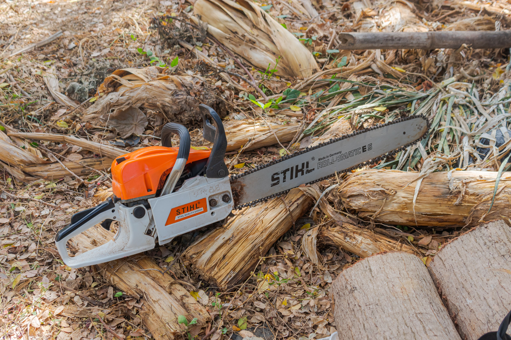

WHO WE ARE
Tools and Machinery for Your Needs
Jophil Tools and Machineries W.A. L.T.D. supplies tools, machinery and spare parts to customers looking for equipment solutions.
We understand that having access to the right tools and reliable spare parts is important for getting work done. That is why we aim to help customers find products that suit their equipment and specific needs.
Whether you are looking for machinery or replacement parts, we welcome your enquiries and are ready to assist you.
Get in Touch →